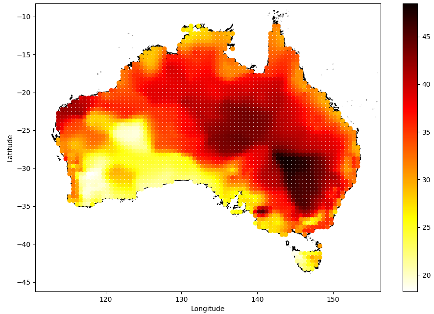
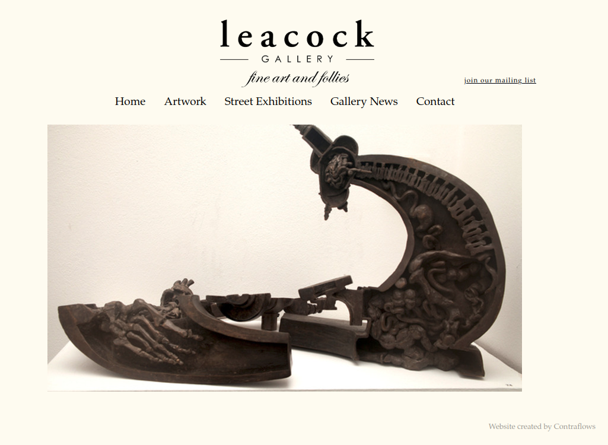

- Sub-seasonal Forecasting
-
Sub-seasonal forecasting, that is making predictions on a 2-8 week time-scale, is notoriously tricky and can't be done accurately using conventional climate forecasting methods. This project grew out of a US based sub-seasonal forecasting competition. The methods used there were applied to an Australian setting with the aim of drought and heat-wave prediction. This project used the National Oceanic and Atmospheric Administration (NOAA) Climate Prediction Center (CPC) data which is a geospatial time series climate data set. A Gaussian processes machine learning model was used as it was well suited to this noisy seasonal data. The project involved developing data acquisition pipelines, automated data-health tools, report generation and fitting machine learning models. I learned a lot about geographical information systems (GIS), visualising data and the technical difficulties of working with data on curved grids.
The country on fire at the start of 2020

- leacock-gallery Website
-
An e-commerce website for a local gallery featuring local Sydney artists. This was a Ruby on Rails web app and featured a (CMS) which allowed the client to create and update local artist profiles and list their works. This was done through an AWS back-end which the client could manage through a simple UI. Users could browse and purchase artworks through the site and these items would then have their stock count updated so their availability was always up to date.
The site has since been removed, a partial archive of the site can be found here, only the landing page is functional.
